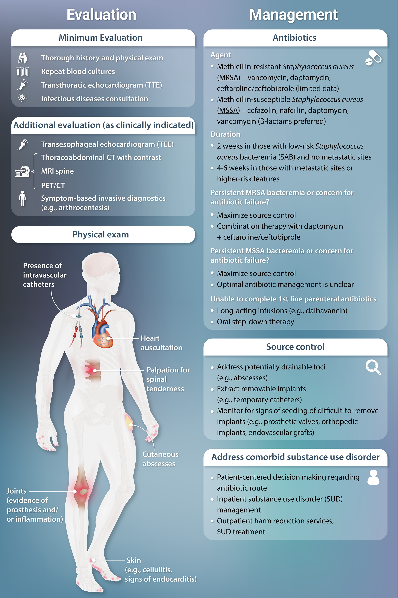
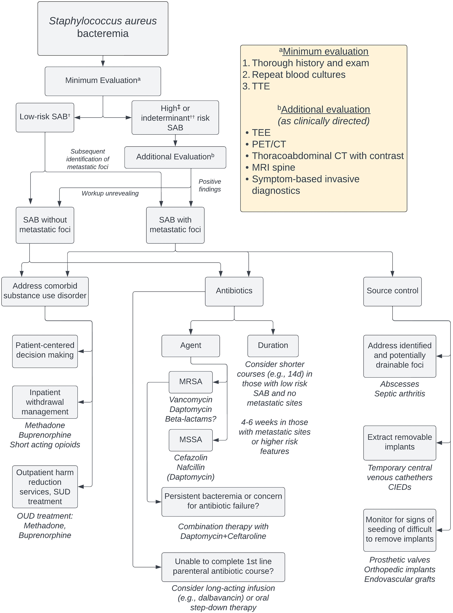
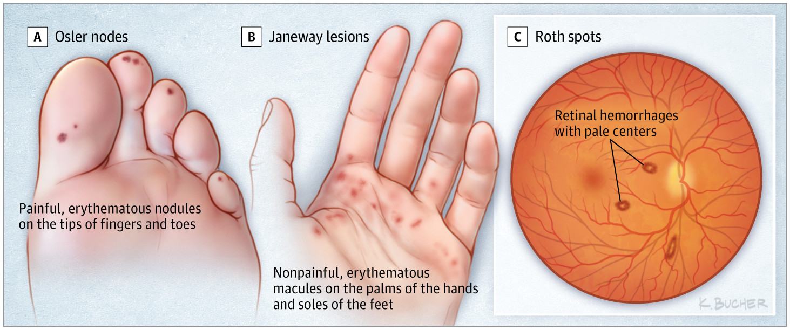

source: Pocket Medicine, 2022
菌血症¶
定義¶
- 原發性菌血症：由於病原菌直接接種血液而引起的血流感染
- 中心靜脈導管相關血流感染（CLABSI）：周邊和導管培養中生長出相同菌株的菌血症（CID 2009;49:1）
- 繼發性菌血症：其他部位的感染（例如，尿路感染、肺炎、結腸炎等）擴散至血液
- 污染：血液培養中生長的細菌，但不代表真實感染
血流感染的風險因子 (JAMA 2012;308:502; CID;2020;71)¶
- 高菌血症可能性的感染症：
- 敗血症
- 血管內感染：心內膜炎、節律器感染、血管植入物或靜脈導管感染
- 脊椎骨髓炎、硬膜外膿瘍、感染性關節炎
- 風險因子：留置導管、靜脈注射毒品使用（IVDU）、免疫抑制（嗜中性球減少、移植）
- 致病微生物：
- 更可能為致病菌：S. aureus、β-溶血性鏈球菌、腸球菌、革蘭氏陰性桿菌、S. pneumo、Neisseria、Candida
- 不太可能為致病菌：coagulase-negative Staphylococcus、白喉桿菌、Cutibacterium
- 生長時間：<24 小時→風險更高，>72 小時→風險較低（除了生長較慢的，例如 HACEK）
- 增加心內膜炎可能性的因素：無明顯感染源的高風險菌血症、在移除導管或引流感染源後持續存在菌血症、宿主有心內膜炎風險的中、已知會引起感染性心內膜炎（IE）的微生物、栓塞
診斷¶
- 抗生素治療前應進行至少兩組血液培養（每組包括有氧和厭氧培養），並從不同的穿刺點取樣
- 如果證實為菌血症，則需每日監測培養，直到48 小時內培養結果為陰性。革蘭氏陰性桿菌可能不需要（ClD 2017;65:1776）
- 如懷疑心內膜炎，需進行經胸前心臟超音波（TTE）/經食道心臟超音波（TEE）（見感染性心內膜炎部分）
- 如果血液培養中有酵母菌生長，需進行TTE和緊急眼科評估
治療 (CID 2009;49:1; JAMA 2020;323:2160)¶
- 根據革蘭氏染色、培養結果和臨床症狀選擇經驗性抗生素，然後根據敏感性調整治療方案
短期中心靜脈導管相關血流感染¶
| 病原體 | 治療方案 |
|---|---|
| S. aureus | 菌血症中心內膜炎的風險：約 25%（JACC 1997;30:1072） 進行感染科會診與降低死亡率相關（ClD 2015;60:1451） 移除中心靜脈導管（CVC），評估心內膜炎、骨髓炎、植入物感染 首選抗生素：MSSA→ nafcillin、oxacillin 或 cefazolin。MRSA→ vancomycin。療程：若宿主正常、無植入物、無心內膜炎或轉移性併發症的證據，則療程為 2 週。否則為 4-6 週。 |
| CoNS | 保留 CVC 並不會降低治癒率，但會增加復發率（CID 2009;49:1187）。如果保留 CVC，治療 10-14 天；如果移除，則治療 5-7 天。 |
| Enterococcus | 移除 CVC 並治療 7-14 天 |
| GNB | 特別是如果涉及Pseudomonas aeruginosa，應移除 CVC。療程為 14 天（如果無併發症，則為 7 天）。 |
| 酵母菌 | 移除 CVC 並治療 14 天，從第一次血液培養陰性開始計算。進行感染科會診與降低死亡率相關。 |
| - 持續血液培養陽性：移除 CVC，尋找轉移性感染（心內膜炎、感染性關節炎、骨髓炎）、感染性血栓或人工植入物（血管植入物、節律器） |


細菌性心內膜炎¶
定義¶
- 心臟內皮（包括但不限於瓣膜）的感染，包括人工瓣膜心內膜炎（PVE）和天然瓣膜心內膜炎（NVE）
危險因子¶
- 異常瓣膜（JAMA 1997;277:1794; JACC 2018;72:2443）
- 高風險：過去曾有心內膜炎、人工瓣膜或環、某些先天性心臟病（未修復的發紺型；分流/導管；過去 6 個月內植入的人工瓣膜）、移植心臟、瓣膜病、心室輔助幫浦（VAD）
- 中等風險：既往風濕熱、非風濕性瓣膜病（包括伴有二尖瓣返流或瓣葉增厚的二尖瓣脫垂）、肥厚型心肌病變、二葉主動脈瓣
- 菌血症風險：IVDU（靜脈注射毒品使用者）、留置靜脈導管、透析、心臟內植入物（如節律器、心臟整流去顫器、植入物）、口腔衛生差
心內膜炎的微生物學¶
| 天然瓣膜心內膜炎（NVE） | 人工瓣膜心內膜炎（PVE） | |||
|---|---|---|---|---|
| 病因 | 非靜脈注射藥物使用者 | IVDU | 早期（≤60 天） | 晚期（>60 天） |
| S. viridans 等 | 36% | 13% | <5% | 20% |
| Enterococcus | 11% | 5% | 8% | 13% |
| S. aureus | 28% | 68% | 36% | 20% |
| S. epidermidis | 9% | <5% | 17% | 20% |
| GNB | <5% | <5% | 6% | <5% |
| 其他 | <5% | <5% | 10% | 10% |
| 真菌^ | 1% | 1% | 9% | 3% |
| 培養陰性^^ | 11% | <5% | 17% | 12% |
| ^ ↑風險因素包括糖尿病、留置導管、免疫抑制 | ||||
| ^^ 培養陰性可能包括：營養缺乏型鏈球菌、HACEK 群（Haemophilus para-influenzae 和 aphrophilus、Actinobacillus、Cardiobacterium、Eikenella 和 Kingella）、T. whipplei、Bartonella、Coxiella、Chlamydia、Legionella、Brucella（JAMA 2007;297:1354；Annals 2007;147:829；J Clin Microbiol 2012;50:216） |
臨床表現 (Lancet 2016;387:882)¶
- 持續性菌血症 → 發燒 (80-90%)、寒戰、夜間盜汗、食欲不振、肌痛
- 瓣膜或瓣膜周圍感染 → 心衰竭、傳導異常 (如房室傳導阻滯)
- 敗血性栓塞：中風、栓塞性心肌梗塞、腎/脾/肺梗塞、感染性關節炎、骨髓炎
- 免疫複合物現象：關節炎、腎小球腎炎
- 亞急性心內膜炎可表現為亞急性進展的“B”症狀（疲倦、體重減輕）
理學檢查¶
- 心臟雜音 (85%)，新發心衰竭的症狀和徵兆（肺水腫、頸靜脈壓升高、水腫）
- 皮膚/眼部變化（少見但高度特異性）
- Janeway lesion（無痛性出血性斑塊，位於手掌/腳掌，因敗血性栓塞所致）
- Osler node（因免疫複合物沉積引起的疼痛性指尖或趾尖結節）
- 甲床出血線
- Roth spot（視網膜出血）
- 骨骼肌系統：脊柱壓痛，紅腫熱的關節
- 神經學異常可能提示栓塞性中風；脊柱壓痛可能提示骨髓炎或硬膜外膿瘍
- 植入裝置：評估中央靜脈導管（CVC）、節律器（PM）/植入型心臟整流去顫器（ICD）部位，及其他人工植入物的部位

診斷 (CID 2010;51:131; EHJ 2015;36:3075; Circ 2015;132:1435)¶
- 血液培養（開始抗生素治療前）：從不同部位取3組（需氧瓶和厭氧瓶），間隔至少1小時。治療後，應至少進行兩次血液培養以確定清除情況，每24-48小時重複一次直到結果為陰性。
- 連續心電圖以評估傳導疾病和 PR 間期延長（可能提示瓣膜周圍膿瘍）
- 心臟超音波：所有患者進行經胸前心臟超音波（TTE）。如遇以下情況則需進行經食道心臟超音波（TEE）：
- TTE 異常但無法診斷；
- TTE 陰性但懷疑度高；
- 懷疑或已有併發症（如房室傳導阻滯）；
- 高風險患者（人工瓣膜、CIED、既往IE、先天性心臟病）；
- S. aureus、Enterococcus 或真菌感染；
- 症狀和徵兆發生變化（如新發傳導異常、瓣膜返流等）；
- 考慮縮短抗生素療程（10-14天）
| 敏感性 | |||
|---|---|---|---|
| NVE | PVE | 膿腫 | |
| 經胸前心臟超音波 (TTE) | 39-58% | 33% | 18-63% |
| 經食道心臟超音波 (TEE) | >90% | 86% | 76-100% |
| - 如 TTE/TEE 結果不明確或懷疑瓣膜周圍膿瘍，可進行EKG-gated cardiac CT | |||
| - 如 TTE/TEE 結果不明確，FDG PET/CT 對懷疑人工瓣膜心內膜炎或⼼臟植入式電⼦裝置感染具有診斷價值 | |||
| - 如懷疑中樞神經系統擴散（感染性動脈瘤、栓塞性中風）或脊椎侵犯（脊椎骨髓炎、硬膜外膿瘍），應進行腦部/脊椎影像學檢查 | |||
| - 培養陰性心內膜炎：可能由於在進行血培養前使用了抗生素。PCR、細菌 16S 核糖體 RNA 和血清學可能有幫助。詳細病史詢問包括動物接觸、旅行、未經消毒的乳製品等。需要傳染病專科評估。考慮微生物學表格中的培養陰性病原體（如上所述）。 |
修改後的杜克標準¶
- 確診：
- 2項主要標準
- 1項主要+3項次要
- 5項次要
- 可能：
- 1項主要+1項次要
- 3項次要
| 主要標準 | 次要標準 | |
|---|---|---|
| - 血液培養中出現常見心內膜炎病原體（在2套不同的培養中生長） - Coxiella 血清學≥1:800 - 心內膜受累：植被、膿瘍、人工植入物脫落或新發生的瓣膜逆流 |
- 具有風險因子 - 發燒 - 血管現象：感染性動脈或肺栓塞、感染性動脈瘤、顱內出血、Janeway lesion - 免疫現象：RF陽性、腎小球腎炎、Osler node、Roth spot - 陽性血液培養但不符合主要標準 |
|
| 敏感性約 90%，特異性 >95%，陰性預測值 ≥92% (CID 2000;30:633) |
治療（強烈建議進行感染科會診）¶
| 病原體 | 治療（Circ 2015;132:1435） |
|---|---|
| 經驗性治療 | NVE 或手術後超過12個月的 PVE： vancomycin + ceftriaxone 手術後12個月內的 PVE：vancomycin + ceftriaxone ± gentamicin（如腎功能良好） |
| Strep | Penicillin, ampicillin, ceftriaxone；如為 PVE，考慮與感染科討論是否加入gentamicin |
| Staph (S. aureus 和 lugdunensis) | MRSA：vancomycin or daptomycin MSSA：nafcillin, oxacillin, or cefazolin（如有中樞神經系統受累則避免使用，因為滲透性差）；vancomycin對 MSSA 的效果不如 β-lactam類 對於對 PCN 過敏的 MSSA，考慮脫敏療法 對於 PVE，考慮在感染科討論後使用rifampin / gentamicin |
| Enterococci | Ampicillin + ceftriaxone或gentamicin；如為 VRE：linezolid, daptomycin, or ampicillin (if S) |
| 革蘭氏陰性菌 | HACEK：ceftriaxone, ampicillin or FQ。Pseudomonas：2 種抗Pseudomonas aeruginosa藥物 [例如，β-lactam類 +（aminoglycoside or FQ）] |
| 真菌（念珠菌、麴菌） | Candida：amphotericin B ± flucytosine or micafungin Aspergillus：amphotericin B or voriconazole 如有菌血症，需眼科會診以排除眼內炎 |
| - 根據病原體分型和敏感性調整為針對性治療 | |
| - 如正在使用抗凝劑或抗血小板藥物，通常可以繼續使用，除非有中風、顱內出血或需要緊急手術的顧慮 | |
| - 持續監測心內膜炎的併發症（如心衰竭、傳導阻滯、骨髓炎、新發生的栓塞現象），這些情況即使在使用抗生素期間也可能發生 | |
| - 治療通常持續 4-6 週 | |
| - 在靜脈注射抗生素 ≥10 天 後，如臨床合適且有可用的口服抗生素，可在與感染科會診後考慮改用口服藥物（NEJM 2019;380:415） | |
| - 無併發症的右側 NVE 或對 PCN 敏感的 Streptococci → 2 週治療可能足夠 | |
| - 靜脈注射藥物濫用（IVDU）相關的感染最好由包括成癮醫學在內的多學科團隊管理 |
手術適應症（早期會診；JTCS 2017;153:1241；Circ 2021;143:e72）¶
- 非常緊急手術：難治性心源性休克
- 緊急手術（初次住院期間）：
- 有心衰竭症狀
- 穿透性感染：瓣環周圍膿瘍、心臟傳導阻滯、瘺管、傳導惡化
- 持續感染：在使用適當抗生素超過 5 天後血培養仍為陽性，贅生物增大或大贅生物
- 栓塞：反覆栓塞或伴有殘餘大（>10 mm）贅生物和嚴重的主動脈瓣逆流/二尖瓣逆流。腦栓塞並非禁忌症，除非有嚴重中風或出血（Stroke 2006;37:2094）
- S. aureus、真菌或多重抗藥性病原體感染
- PVE（如功能障礙或脫落則為非常緊急手術）
心內膜炎預防 (Circ 2007;116:1736)¶
| 心臟病變^ | 人工瓣膜；過去曾有心內膜炎；先天性心臟病（包括未修復或不完全修復的發紺型先天性心臟病（姑息性分流或導管），使用人工材料完全修復的先天性心臟病後的前 6 個月；伴有瓣膜病變的心臟移植受者。（不再建議在後天瓣膜功能不全、二尖瓣脫垂伴瓣葉增厚或返流、肥厚型心肌病中進行預防。） |
|---|---|
| 手術^ | 牙科：涉及牙齦組織或牙齒根尖區域的操作或穿透口腔黏膜（例如，拔牙、牙周手術、植牙、根管治療、洗牙） |
| 預防方案 | 口服：amoxicillin 2 g，手術前 30-60 分鐘 無法口服者：ampicillin 2 g IM/IV 或 cefazolin or ceftriaxone 1 g IM/IV 對 PCN 過敏者：cephalexin or azithromycin or clarithomycin or doxycycline |
| ^患者應同時符合兩個適應症（高風險病變和高風險手術）才能進行預防 |
Original: Bacteremia and IE